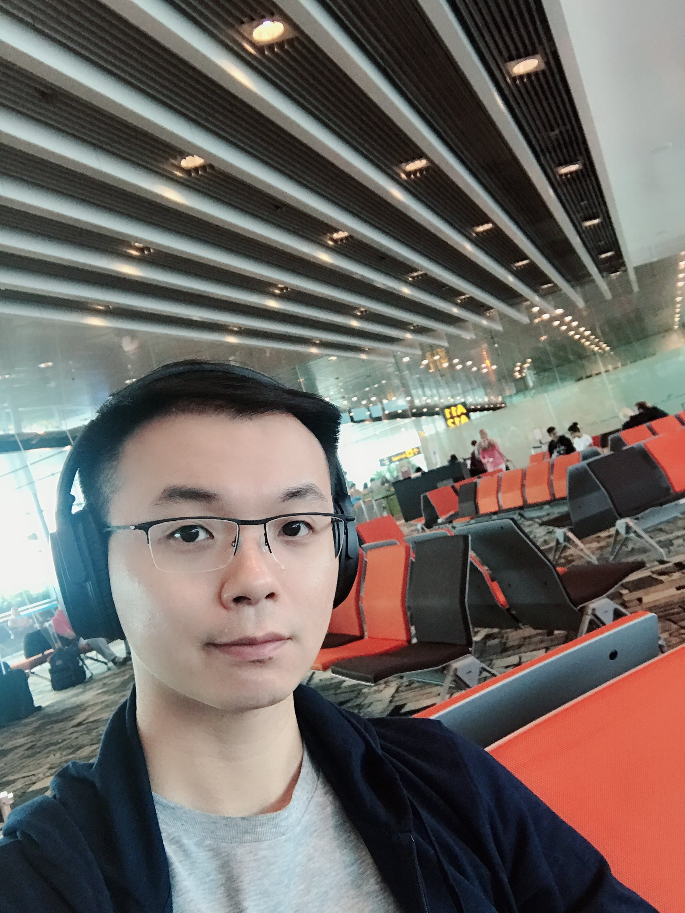

hongyuanzhu.cn (AT) gmail (DOT) com
[DBLP]
[Google Scholar]
Homepage
Publications
Brief Bio:
Hi! My name is Hongyuan Zhu (Chinese: 朱宏远). I am currently a scientist in the Institute of Infocomm Research (I2R), at the Agency for Science, Technology, and Research (A*STAR), Singapore. I am leading the Interactive Vision Lab. I obtained my Ph.D. from Nanyang Technological University (NTU), SG, in 2015 May.
Working Experience:
- Institut of Infocomm Research (I2R), Agency for Science, Technology and Research (A*STAR), Singapore.
- Scientist II, Research Lead (2019.04-Now)
- Scientist I, Principal Investigator (2014.08-2019.04)
Research Interests:
- Low-level Vision
- The research on "Differentiable Physical based Image Enhancement" can be found >> HERE
- Scene Parsing
- The research on "Semantic Scene Parsing with Various Supervision" can be found >> HERE
- Video Analytics
- The research on "Rapid Human Action Detection and Multi-modal Understanding" can be found >> HERE
- Project X @ Interactive Vision Lab
- Feel free to approach me if you would like to collaborate on the topics you are interested. There is no limit to my research topics ;-)
Recent News:
- 2019-04: One papers "COMIC: Multi-view Clustering Without Parameter Selection" has been accepted by ICML.
- 2019-04: Our ICCV17 extended journal paper "YoTube: Searching Action Proposal via Recurrent and Static Regression Networks" has been selected as ESI Highly Indexed Paper.
- 2019-04: I have been invited as a PC member for CVPR, ICCV, ACM MM, AAAI in 2019.
- 2019-03: One paper "Spatial Fusion GAN for Image Synthesis" has been accepted by CVPR 2019.
- 2019-03: One paper for "Anomaly Detection in Video Surveillance" has been accepted by IEEE TIFS.
- 2019-01: One paper for have been accepted by AAAI 2019 as Oral Paper!
- 2018-11: Our ICCV17 work on action detection has been adversertised as A*STAR Research Highlighted Research among 25 Research Institutes!.
- I'm selected as IET Image Processing Special Issue Guest Editor, Call For Paper: Adversarial Learning in Image Processing
Academic Activities:
- Professional Activities
- - Guest Editor: IET Image Processing, 2018. Guest Editor
- - Session Chair: IJCAI 2018, PCM 2014
- - Journal Reviewer: IEEE TPAMI, TIP, TCSVT, TNNLS, TMM, ACCESS, Elsevier JVCI, CVIU
- - Conference Reviewer: CVPR, ICCV, NIPS, ACM MM, AAAI, ACCV, ICME, ICIP, VCIP
Media Coverage:
Awards:
- - 2017 International Consortium of Chinese Mathmaticians 2017, Distinguished Paper.
- - 2014 ICIP14 SPS Travel Grant \& ICIP14 Top-10\% paper award.
- - 2014 WACV14 Student Travel Grant.
- - 2010 ~ 2014 NTU Graduate Research Scholarship.
- - 2010 Ocean-Tech Award for Best Student Final Year Project.
- - 2010 First Prize of IEEE Perl Riverl Delta FYP Competition. (1/20)
- - 2009 BNU Affinity Card Scholarship(Awarded to top 3 students).
- - 2008 Henry Fork Foundation Scholarship(Awarded to top 3 students).
- - 2006 - 2010 Dean's Honor List (Awarded to top $10\%$ students).